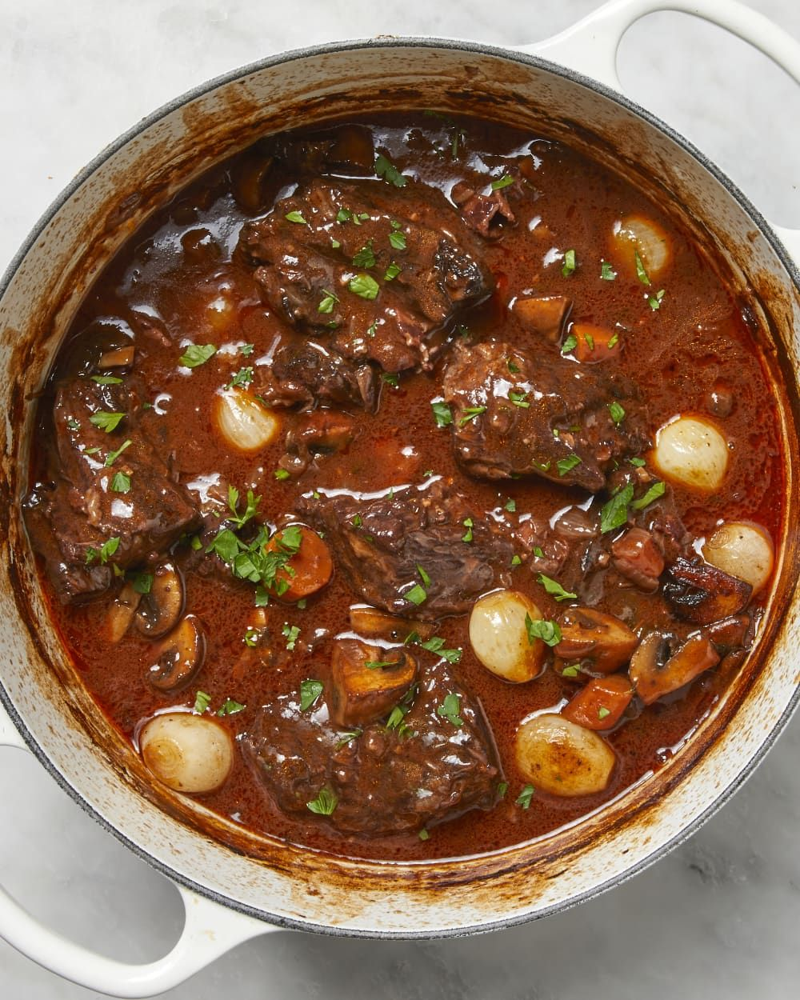

Beef Bourguignon

Description
Beef bourguignon (a.k.a. beef Burgundy) is a French beef stew braised in red wine and beef broth. It also prominently features onions, carrots, and mushrooms.
Ingredients
Marinade :
- 3 cups Burgundy Wine
- 2 onions, thinly sliced
- 2 carrots, chopped
- 2 tablespoons brandy
- 1 clove garlic, crushed
- 10 whole black peppercorns
- 1 teaspoon salt
- 1 sprig fresh parsley
- 1 bay leaf
- 2 pounds cubed beef chuck roast
Bourguignon :
- 4 tablespoons olive oil, divided
- 1/4 pound bacon, cubed
- 2 onions, chopped
- 3 tablespoons all-purpose floor
- 2 cloves garlic, crushed
- 2 tablespoon tomato paste
- 1 (10.5 ounce) can beef broth
- salt and pepper
- 4 tablespoons butter
- 1 pound fresh mushrooms, sliced
Steps
- Start marinating the meat two days in advance. Chill in the fridge
- Brown the beef in olive oil until browned on all sides, then transfer to a bowl
- Sauté the bacon in the same skillet, then move the bacon to the beef bowl
- Deglaze the skillet with a cup of the marinade
- Sauté the onions and carrots. Move the veggies to the bowl with the meat
- Add the flour to the skillet and stir until brown
- Add the tomato paste, garlic, broth, marinade, and salt and pepper
- Whisk until smooth, then transfer to the bowl with the meat and veggies
- Transfer the mixture to a baking dish and bake for three hours
- Sauté the mushrooms, then stir the mushrooms into the bourguignon
Home